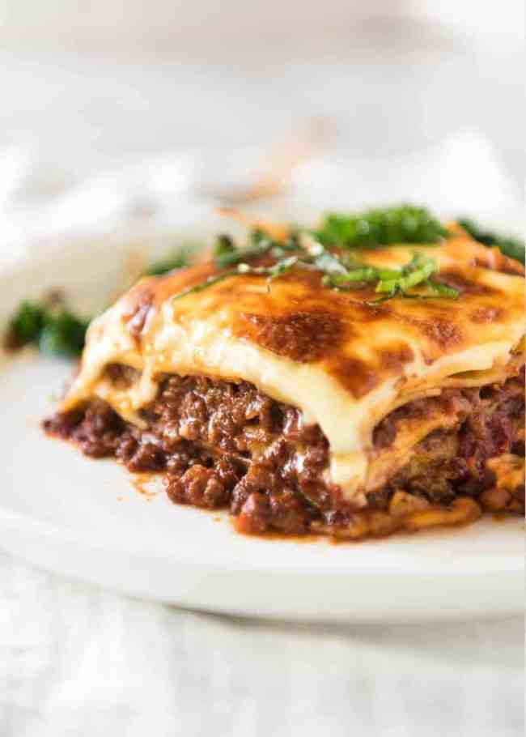

Lasagne

Description
Lasagna, lasagna. How I love thee!
It is possibly one of the most loved foods in the whole wide world, and understandably so.
There is just something so sentimental about lasagna, so comforting.
It evokes images of of gatherings with family and friends all around the world.
It is the sort of food that is like a big warm hug, and so more-ish you want to keep digging in until you burst.
Homemade Lasagna - three parts
There are 3 components to making lasagna:
- The meant sauce;
- The white sauce - creamy and thick, but no cream required!
- Assembling and baking.
What goes in lasagne
The Meat Sauce is basically just like Bolognese. You need:
- Onion, garlic, carrot and celery - for the flavour base
- Beef
- Canned tomato and tomato paste
- Red wine - for extra flavour!
- Seasonings - beef bouillon cubes, bay leaves, thyme, oregano, Worcestershire sauce
For the whie sauce, you need:
For assembling, you need:
- lasagne sheets - preferably fresh but dried works just fine too
- cheese!
How to make lasagne
- Cook the meat sauce using the ingredients above. Remember, low and slow!
- Layer up!
- Smear some meat sauce
- Top with white sauce
- Lay out your lasagne sheets
- Repeat!
- Finish off by topping with remaining white sauce and sprinkle some cheese.
Return to main page